TETHICS Press Kit
Brand sheet for a cross-chain legitimacy and governance protocol.
TETHICS protects founders and the public from fake launches across Base and Solana. The visual system is institutional rather than speculative: shield forms, network links, restrained color, and explicit governance framing.
Logo System
Core assets
Horizontal
Default product and website lockup.
Mark
Use when horizontal space is constrained.

Dark Variant
Use on dark governance or social backgrounds.
Monochrome
Use for print, embossing, and neutral export contexts.
Color System
Primary palette
Usage
Recommended rules
- Use the horizontal lockup by default in navigation, decks, docs, and social banners.
- Use the mark-only asset for app icons, favicons, wallet entry points, and profile avatars.
- Prefer the dark variant only on dark surfaces with enough breathing room.
- Do not distort, recolor arbitrarily, or place the logo over noisy imagery.
- Keep the tone institutional and protocol-first, not memecoin-like.
Exports
Included deliverables
- SVG source files for all primary lockups.
- PNG fallback files for older environments and app icon surfaces.
- Open Graph social card artwork.
- Printable brand sheet: export this page to PDF from the browser when needed.